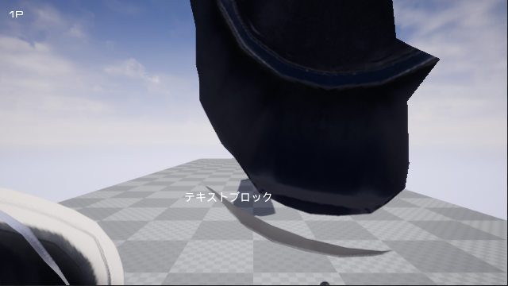
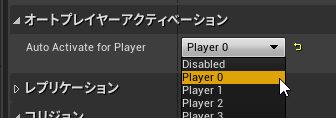
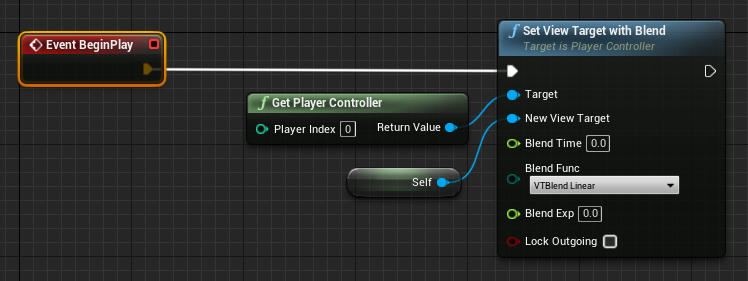
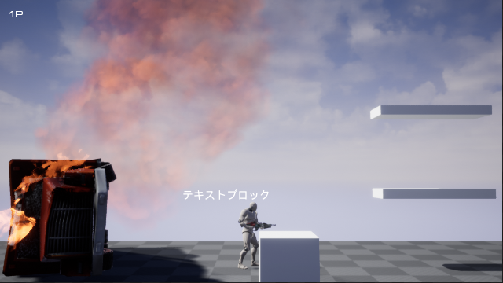

2022-09-29
自分でSpawnActorしたカメラがアクティブな表示にならない
前提
キャラクターにカメラを仕込まず、自分で継承したCameraActorを使いたい
起きた現象
自分のカメラをSpawnActor、しかし画面はデバックカメラのような感じで自分のカメラの描画にならない

｡oO(違う、そうじゃない)
対応
CameraActorのプロパティでオートプレイヤーアクティベーションを設定してみる
デフォルトはDisabledになってる
SetViewTargetしてみる

1でとりあえずOKだと思うけど、BPでサっと確認したい時は2の使うといいかも。
結果

｡oO( Yes I Do. )